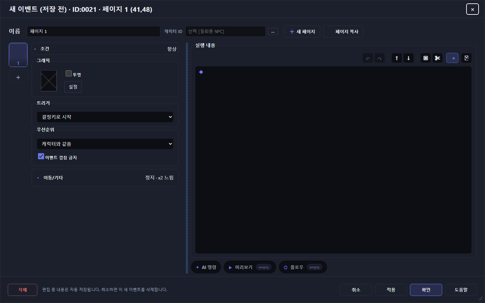

01 / VERDICT
문제는 “못 만든다”가 아니라
“틀리게 만들어도 모른다”다.
이 에디터의 가장 큰 위험은 기능 부족이 아니다. 복잡한 이벤트를 만든 뒤, 그것이 저장됐는지·안전한지·실제로 같은 방식으로 도는지를 한 화면에서 확신할 수 없다는 점이다.
툴박스는 프로급인데, 계기판과 브레이크는 프로토타입 수준이다.
조건·분기·연출·전투·현대 명령까지 폭이 넓다.
기본 구조
6/10발견성
5/10테스트 루프
3/10오류 예방
2/10취소할 작업이 이미 정본처럼 흐를 수 있다
작업 중 본문은 live project에 있고 autosave 투영에도 들어간다. draft 표지만 떼면, 다른 세션은 중간 결과를 완성본으로 볼 수 있다.
123개 명령에 비해 저장 게이트가 없다
잘못된 참조, 끊긴 goto, 무한 자동 실행, 보이지 않는 충돌 이벤트를 “확인” 버튼이 막아 주지 않는다.
테스트 버튼이 작업 화면 밖에 있다
모달의 하단은 삭제·취소·적용·확인·도움말뿐이다. 실제 이벤트 테스트는 외부 툴바에서 다시 찾아야 한다.
“미리보기”라는 이름이 너무 자신만만하다
선택지는 전부 펼치고, loop는 한 번만 돌며, goto는 점프하지 않는다. 실행기가 아니라 설명용 시뮬레이터에 가깝다.
02 / SCREEN
첫 화면부터 “무엇을 해야 하지?”가 남는다.
기본 2열 구조는 합리적이다. 문제는 우선순위다. 가장 큰 면적은 비어 있고, 가장 중요한 검증·테스트·저장 상태는 가장 약하게 보인다.
이미지 성격
아래 화면은 저장소의 제품 내 도움말 자산이다. 실제 UI 구조를 설명하는 근거로 사용했지만, 2026-07-30 현재 빌드를 새로 캡처한 픽셀 QA 자료로 과장하지 않는다.

1 2 3 4 51맥락 표시는 좋다ID·좌표·페이지를 제목에서 바로 본다.
2설정은 접힌다조건/이동의 점진 공개는 좋은 선택이다.
3가장 큰 면적이 빈다다음 행동 안내도, 오류 요약도 없다.
4보조 도구는 아래AI·미리보기·플로우가 핵심 흐름과 분리된다.
5실제 테스트가 없다저장 버튼은 3개인데 실행 버튼은 0개다.
조건 15종: 강력하지만 “벽”처럼 보인다
표현력은 훌륭하다. 그러나 펼치는 순간 폼이 화면을 압도한다. 조건을 고르는 경험보다 데이터베이스를 작성하는 경험에 가깝다.
검색은 좋다. 숫자 탭은 나쁘다.
123개를 검색하는 기능은 필수이고 잘했다. 반면 1·2·3·4는 분류 의미를 기억시키지 못한다. 툴팁을 보기 전까지 탐색 지도는 없다.
그래픽 선택은 눈으로 확인할 수 있다
목록·시트·방향·프레임을 한곳에 둔 점은 명확하다. 다만 별도 모달이므로, 한 줄 대사 이벤트도 왕복 단계가 늘어난다.
접기는 맞다. 요약의 역할이 더 커야 한다.
이동 설정을 접은 것은 좋은 밀도 조절이다. 하지만 제작자는 접힌 상태에서도 이 NPC가 실제로 어떻게 움직이는지 더 즉각적으로 읽어야 한다.
03 / JOURNEY
한 줄 대사도 제작 → 확인 → 테스트가 한 호흡이 아니다.
초보자가 “NPC에게 말을 걸면 한 문장 말하기”를 만든다고 하자. 가장 단순한 이벤트도 최소 약 6번의 클릭과 입력, 그리고 테스트를 위한 화면 이탈이 필요하다.
빈 타일 선택
새 이벤트가 live map에 바로 들어간다.
진입은 빠름이름 입력
페이지/이벤트 이름의 관계를 처음부터 이해해야 한다.
개념 학습그래픽 모달
목록 → 시트 → 방향 → 프레임 → 확인.
모달 왕복명령 추가
+ 버튼 또는 숨은 더블클릭/Enter affordance.
발견성명령 찾기
4개 숫자 탭/10개 그룹/검색 안에서 문장 표시를 찾는다.
분류 학습문장 편집
별도 명령 dialog에서 입력 후 확인한다.
또 모달적용/확인
자동 저장·적용·확인의 차이가 데이터 의미와 일치하지 않는다.
상태 모호외부에서 테스트
모달을 나가 이벤트를 선택하고 툴바의 테스트를 다시 찾는다.
루프 단절약 6+단순 한 줄 대사의 최소 클릭 제스처 + 타이핑
3단계명령 1개당 추가 열기 → 선택 → 편집 확인
1회 이탈실제 테스트를 위해 이벤트 에디터 밖으로 이동
이벤트 에디터가 작업의 중심이어야 하는데, 지금은 작업을 “준비하는 창”에 가깝다.
04 / P0 DEFECT
“취소 가능”과 “원격 저장됨”이 동시에 참일 수 있다.
이건 문구 하나 고칠 문제가 아니다. 편집 트랜잭션의 경계가 무너진 구조적 결함이다.
왜 위험한가?
같은 창에서는 취소가 원본을 복원하므로 멀쩡해 보인다. 그러나 reload·다른 클라이언트·충돌 상황에서는 draft metadata 없이 중간 본문만 정본처럼 남을 수 있다.
어떻게 고쳐야 하나?
마지막 Apply/OK snapshot만 canonical project에 둔다. working body는 local draft store 또는 명시적인 remote draft namespace로 분리하고, UI에 작업 중·적용됨·원격 저장됨을 따로 표시한다.
05 / GAME DESIGN
게임을 만들 언어는 풍부하다.
게임을 다듬을 도구는 빈약하다.
이벤트 에디터는 명령 개수로 보면 강력하다. 하지만 재미는 명령 개수에서 나오지 않는다. 반복 속도, 상태 파악, 실패 원인 추적, 재사용에서 나온다.
123
맵 이벤트 피커 노출 명령
대화·분기·이동·상점·전투·사운드·조명·날씨·제작·도구·상자 등 폭은 좋다. 122개는 metadata 기준 runtime-full이며 1개는 editor-only 주석이다.
15페이지 조건 종류
10피커 명령 그룹
32빠른 명령 버튼
0저장 시 통합 검증 게이트
🧩
명령 중심, 의도 중심이 아니다
제작자는 “보물상자”, “문 이동”, “보스전”을 만들고 싶다. UI는 “스위치 조작”, “조건 분기”, “이벤트 삭제”를 조립하라고 한다. 자주 쓰는 게임 패턴을 매번 저수준 명령으로 재건한다.
🕳️
위험한 기본 조합
그래픽 없음 + 캐릭터와 같은 우선순위 + 겹침 금지는 ‘보이지 않는 벽’을 만들기 쉽다. 이것이 의도한 투명 트리거인지 실수인지 UI는 구분하지 않는다.
🔁
자동 이벤트 안전 검사가 얕다
auto/parallel 경고가 switch/variable 중심의 top-level 조건만 본다. self-switch·timer·all/any/not 등 나머지 조건과 실제 종료 가능성은 충분히 판단하지 못한다.
🧭
상태 그래프가 없다
페이지가 언제 켜지고 꺼지는지, 어떤 스위치가 어디서 바뀌는지 한눈에 볼 수 없다. 복잡해질수록 제작자는 머릿속에 상태 머신을 들고 있어야 한다.
📦
재사용 단위가 약하다
페이지 복사는 있지만 대화 NPC·보물상자·컷신·상점 같은 검증된 템플릿과 최근 사용/즐겨찾기 흐름이 부족하다. 반복 제작 비용이 누적된다.
🎮
재미 검증이 너무 멀다
이벤트를 만들고 곧바로 플레이해 리듬·대사 길이·연출 타이밍을 확인해야 한다. 현재는 모달을 벗어나 외부 테스트를 찾아야 하므로 미세 조정 횟수가 줄어든다.
06 / PREVIEW ≠ PLAY
미리보기는 “실행”처럼 생겼지만
실행기가 아니다.
이름과 컨트롤은 신뢰를 만든다. 그런데 실제 동작이 그 신뢰를 받쳐 주지 못하면, 없는 기능보다 더 위험한 오해를 만든다.
스크립트 둘러보기
- 선택지의 모든 branch를 복제 상태로 펼침
- loop는 한 번만 순회
- label/goto는 기록하지만 실제 점프 없음
- 대부분 명령은 상태 변화 없는 기본 처리
- 이전/다음/자동 재생 UI가 실행기처럼 보임
VS
PlayScene.runEvent
- 새 PlaySession 생성
- player/createPlayGame registry 전달
- 대화 준비 후 실제 runEvent(eventId) 호출
- 실제 scene/interpreter 경로 사용
- 하지만 이 버튼은 모달 밖 툴바에 있음
정직한 해결: 지금 기능은 “스크립트 둘러보기”로 이름을 바꾸고 한계를 적어라. 또는 실제 interpreter를 격리 세션에서 돌리는 sandbox preview로 교체하라.
07 / WHAT WORKS
다 나쁜 건 아니다.
살릴 뼈대는 분명하다.
좋은 결정을 정확히 보존해야 개선이 리라이트가 아니라 진화가 된다.
설정 / 실행의 2열 분리
이벤트의 “언제·어떻게 보이는가”와 “무엇을 하는가”를 공간적으로 나눈 기본 IA는 맞다.
검색 가능한 대규모 피커
100개가 넘는 명령을 검색하고 그룹으로 볼 수 있다. list/grid 기억과 runtime badge도 실용적이다.
조건·이동의 점진 공개
기본 접힘과 요약 badge/chip은 복잡도를 늦게 노출한다. 방향은 옳고 요약 품질을 더 높이면 된다.
취소 복원과 crash vault
같은 세션의 원본 복원, 즉시 checkpoint, 사라진 이벤트 복구는 방어적으로 잘 구현되어 있다.
명령 편집 도구
undo/redo·이동·복사·잘라내기·명시적 추가 버튼이 있어 더블클릭 하나에만 의존하지 않는다.
실제 런타임 테스트 경로
선택 이벤트 테스트는 mock이 아니라 최종적으로 실제 PlayScene.runEvent로 이어진다. 위치만 제대로 옮기면 강한 기반이다.
08 / REDESIGN
새 기능을 더 넣기 전에
작업 루프를 닫아라.
핵심은 화려한 재디자인이 아니다. 편집 → 검증 → 실제 실행 → 수정 → 원격 저장을 한 창에서 이해할 수 있게 만드는 것이다.
BEFORE · 현재 정보 구조 요약
이벤트 편집×
조건
그래픽
트리거
이동/기타
◆
실행 내용이 없습니다
실행 내용이 없습니다
AI 명령 미리보기 플로우
AFTER · 권장 구조
EV0021 · 상자 이벤트 · 페이지 1작업 중 ●
1 상자 · 활성
언제 실행? 조건 1
어떻게 보임? 상자
어떻게 시작? 결정키
어떻게 움직임? 정지
01 문장 표시 · “상자를 열었다.”
02 아이템 +1 · 회복약
03 셀프 스위치 A · ON
＋ 명령 검색 또는 템플릿 삽입
✓ 참조 정상
✓ 종료 가능
✓ 런타임 지원
✓ 종료 가능
✓ 런타임 지원
! 시작 타일이 통행 불가일 수 있음
상태 흐름 보기
변경 사항 3개
① 상태를 말로 보여 준다작업 중 / 적용됨 / 원격 저장됨 / 충돌을 분리한다.
② 테스트를 같은 창에 둔다현재 draft snapshot으로 즉시 실제 interpreter를 연다.
③ 오류를 옆에서 보여 준다페이지·명령·필드로 바로 이동 가능한 검증 목록을 둔다.
④ 제작 의도로 시작한다대화 NPC·상자·문·상점·보스전 템플릿을 우선 제공한다.
09 / PRIORITY
고칠 순서가 중요하다.
색·간격·아이콘부터 만지면 실패한다. 데이터 의미 → 검증 → 테스트 루프 → 반복 생산성 순서로 가야 한다.
P0 · TRUST
먼저 신뢰를 복구
- working draft를 canonical project에서 분리Apply/OK snapshot만 정본으로 저장
- Apply/OK/Test 전 통합 validatorfatal 차단, warning 위치 링크
- 저장 상태를 5단계로 분리 표시로컬 복구 / 작업 중 / 적용 / 원격 / 충돌
P1 · LOOP
제작 루프를 닫기
- footer에 “이 이벤트 테스트” 추가중복 flush 제거, draft sandbox 실행
- 미리보기의 이름과 진실성 교정둘러보기로 변경 또는 실제 sandbox화
- passability-aware 테스트 spawn시작 좌표와 방향을 미리 표시
- 숫자 탭을 상시 텍스트 탭으로대화·조건 / 배우·전투 / 맵·연출 / 시스템
P2 · SPEED
반복 비용을 줄이기
- 검증된 이벤트 템플릿대화, 상자, 문, 상점, 보스전, 컷신
- 최근 사용·즐겨찾기·키보드 검색명령당 3단계 비용 축소
- focus/caret/open state 보존전체 동적 재렌더의 입력 단절 방지
- 페이지별 문제 badge와 상태 그래프복잡한 이벤트를 머리 대신 화면에 저장
10 / EVIDENCE
주장과 코드 근거.
이 보고서는 느낌만으로 욕하지 않았다. 현재 코드의 편집·저장·테스트·실행 경로를 따라가며 화면 문제와 구조 문제를 연결했다.
| 주장 | 핵심 코드 | 확인한 내용 |
|---|---|---|
| 이벤트 편집 진입 | src/editor/EditScene.ts:881–885src/editor/eventDraftActions.ts:18–64 | 기존/신규 이벤트가 modal로 들어가고, 신규 이벤트는 live map 배열에 먼저 삽입된다. |
| P0 draft 의미 불일치 | src/project/eventDrafts.ts:30–56src/project/legacyDbProjectSync.ts:159–163 | working body는 투영에 남고 열린 draft metadata는 제거될 수 있다. |
| 취소·적용·확인 | src/editor/panels/eventEditor/modal.ts:170–214src/editor/eventDraftActions.ts:66–79 | footer에 실제 테스트가 없고 saveEventDraft는 통합 lint 결과를 gate하지 않는다. |
| 2열 정보 구조 | src/editor/panels/eventEditor/content.ts:72–200 | 왼쪽 페이지 속성, 오른쪽 실행 내용과 보조 도구로 구성된다. |
| 명령 추가 비용 | src/editor/panels/eventEditor/content.ts:234–398 | 명령 선택 후 다시 command edit dialog를 거쳐 확인해야 한다. |
| 4탭 명령 피커 | src/editor/panels/eventEditor/commandPicker.ts:208–374 | 검색·list/grid·그룹·runtime badge는 좋지만 탭 가시명은 숫자 1–4다. |
| 조건과 안전 경고 | src/editor/panels/eventEditor/pageProps.ts:481–531, 698–705 | 조건/이동은 접히지만 auto/parallel 경고는 switch/variable 중심으로 얕다. |
| 제한적 미리보기 | src/editor/panels/eventEditor/previewSimulation.tseventScriptModernViews.ts | 선택지·loop·goto 등 실제 interpreter 의미를 완전히 재현하지 않는다. |
| 외부 이벤트 테스트 | src/editor/panels/menu.ts:397–474testPlayModal.ts:54–82 | 외부 툴바에서 진입하며 menu와 modal 양쪽에 flush가 있어 중복 준비 경로가 보인다. |
| 실제 런타임 연결 | src/editor/panels/testPlayModal.ts:278–287src/player/PlayScene.ts:203–206, 464–481 | 최종적으로 실제 PlaySession과 PlayScene.runEvent를 사용한다. |
검토 범위와 한계
확인함: OpenWiki 편집 라우팅/이벤트 저작/명령/수정/검증 문서, 현행 소스의 modal→draft→autosave→test→PlayScene 경로, 제품 내 도움말 이미지 5장.
이번 보고서에서 실행하지 않음: 현재 빌드의 신규 브라우저 픽셀 캡처, 실제 LegacyDb 다중 세션 재현, 대형 프로젝트에서 중복 flush 시간 측정.
따라서: 저장 의미 문제는 코드 경로상 P0 위험으로 판정했지만, 원격 재현 동영상이 있는 실측 버그 보고서라고 주장하지 않는다. UI 화면도 제품 내 도움말 자산임을 명시했다.